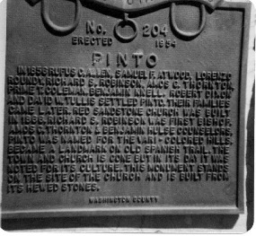

Chapter 6
Lorenzo apparently stayed in the area of Harmony until around May of 1856. He is listed in the Deseret News on Feb 6th, 1856, as a member of the Second Quorum of Seventies, as being in Davis County. He was most likely still in Harmony throughout the Spring of 1856, though he is known to take trips to the north on occasion. A few references exist concerning his activities in the Harmony area, but are not specifically dated. Lorenzo was familiar with Pine Valley, since it was on the "California" route between Harmony and Santa Clara. It is reported that "Robert Richey, Lorenzo W. Roundy and Jehu Blackburn erected a saw mill in Pine Valley in 1855-1856, but this mill was not in running order until 1857, when sawyers commenced to turn out lumber in large quantities, supplying the surrounding settlements of Washington, Santa Clara, Harmony, Pinto, and other places, with lumber and shingles."1
26 Apr. 1856 - LWR and others rebaptized by Isaac C. Haight (Stake President).2
There is nothing recorded, though we expect that he was home in May of 1856. The Southern Indian Mission appears to be basically completed, with a number of the missionaries going elsewhere and some remaining in the Harmony and Cedar City area. It is not clear, however, when or whether he was released as a missionary. Rufus Allen was released in August of 1857 as it is mentioned that he was replaced by Jacob Hamblin as the president of the Indian Mission, replacing Brother Allen. It does appear, though that efforts with the Indians had pretty much wound down with the exception of those in Santa Clara and Las Vegas.
In the fall of 1856, it is recorded that Rufus C. Allen, Lorenzo Roundy and Samuel F. Atwood went to what is now Pinto. There is a bronze Plaque there detailing this event as the beginning of the town. Another reference says that "in the fall of 1856 other Indian Missionaries left Fort harmony and located at Pinto Creek …" then listing 5 others not named on the bronze plaque.3 In September 1856, at the Washington County court, held at Harmony, a petition was made and granted that "The control of the water, timber, and grass of Pine Valley is hereby granted to C. W. Dalton, L. W. Roundy, John Blackburn and Robert Richey" with some specific details listed.4 In the "History of Pinto, Utah" by Rulon Knell, there are some details of this location. He writes "In the fall of 1856, six or eight Indian missionaries camped on Pinto Creek by a hay stack owned by Brother Gould… The missionaries, who were in [the] charge of Rufus C. Allen, were on their way from New Harmony to Santa Clara. Benjamin Knell, one of the missionaries, writes: "Rufus C. Allen was our president, or captain, … From our visit to the Santa Clara we went to Pinto and camped at Gould's hay stack in the summer of 1856. Brothers Dixon, Richard S. Robinson, Amos G. Thornton, Prime T. Coleman and David Wilson Tullis were a part of the company. That year we made our homes on the Pinto Creek hauling hay from the Mountain Meadows for our stock. The winter of 1856-57 was quite mild. Jehu Blackburn and I went on horseback up Pinto Creek to ascertain if we could get a team up the Canyon as he wanted to get into Pine Valley from New Harmony. We found the pass impossible. We drove two yoke of oxen and a heavy wagon on the trail to the head of the middle fork of Pinto creek and then climbed the ridge, getting into Pine Valley that night. Heavy freight teams enroute from Los Angeles, California to Salt Lake City would frequently camp on the Pinto Creek. The mountains were covered with grass. Jacob Hamblin was appointed our captain in a short time and he frequently came to Pinto to give us council."
"Another account says that a meeting was called in the fall of 1856 by Rufus C. Allen who proposed, on account of the shortage of water, that the settlers at Harmony should take the water out from the Kanarra Creek, and the missionaries take the water from Harmony as this arrangement would give enough water for both parties. John D. Lee was opposed to this plan and the company divided, some going to the Santa Clara and others to Pinto. The following named brethren went to Pinto:

Photo by Margaret C. Rich
Rufus C. Allen (captain)
Samuel F. Atwood
Lorenzo W. Roundy
Richard S. Robinson
Amos G. Thornton
Prime T. Coleman
Benjamin Knell
Robert Dixon
David W. Tullis
The same fall Nathaniel V. Jones came from Salt Lake City on his way to Las Vegas to work the lead mines there. He took Brother Samuel F. Atwood and Lorenzo W. Roundy with him. Rufus C. Allen finished the first dug-out on the Pinto Creek and two families, Richard S. Robinson and Rufus C. Allen, and a number of the unmarried men spent the winter of 1856-57 on Pinto Creek." 5
Lorenzo is listed in the History of Las Vegas Mission as being included with Nathaniel V. Jones and company. "We left Cedar City on the 16th of November [1856], with Brothers Roundy and Williams with us, making nine in all in the company."6
In the county court records, it is later recorded (December 2) that Jacob Hamblin be appointed to the office of Selectman "… in the place of Captain Lorenzo Roundy who has moved to another county."7
In the Nevada State Historical Society papers, there are letters and journal writings that detail the experiences of this party, including some mention of Lorenzo Roundy. They are summarized here8.
I begin with a letter to Wilford Woodruff from Elder Samuel F. Atwood, dated Jan. 4, 1857, he starts: "Brother Nathaniel V. Jones and company (of which I was one) left the city on the 31st of Nov. [most likely Oct 31], 1856, … and being detained three days at Parowan for the arrival of Brothers James Williams from Cedar City and Lorenzo W. Roundy from Harmony, we did not arrive at Cedar City until the 14th of November.9 I will here say that the reformation has spread more or less in all of the different settlements baptism has been administered to the Saints in many of them and repentance and reformation has been and is being preached to all …
"We left Cedar City on the 16th of November, with Brothers Roundy and Williams with us, making nine in all in the company. …10
"We started on our journey again on the 21st and passed through Painter Creek Valley (Pinto). Here Brother Rufus C. Allen with some of the Indian missionaries have commenced to make a new settlement and intend to finish the fort next season. The valley is a small one and the land and water is not sufficient to sustain but a few families. The range is good and extensive. We arrived at the Muddy on the 2nd11 of December, the place that has been represented as a good place for a settlement, but for the life of me I could not see nor imagine where the land either for plowing, meadow, or range could be found ; neither wood nor timber. We saw more Indians at this place than at any other on the road and they appeared to be quite friendly. We started across the desert on the 3rd and arrived at Las Vegas (called by some at that place Lost Bagus, which is a very appropriate name for it) on the 4th. … We arrived at the diggings on the 8th, which is in a high range of mountains about 30 miles from Las Vegas in a south-west course. Brother Jones immediately after our arrival commenced to make the necessary preparations to commence to smelt out the lead.
"Jan. 10, 1857
Everything was ready and the smelting was commenced on the 25th of December and by diligence and hard labor we have run out about nine thousand pounds. The mineral yields from 20 to 30 per cent., proving to be of a much poorer12 quality than was expected to be when seen in the lead on the mountain.
"Monday, Jan. 12. Brother Savage and company left for California. After dusk Brother Samuel Turnbow, Father Peart, Brother Roundy, James Williams, and James Bean arrived at Las Vegas with their loads of lead from the mines on their way to Great Salt Lake.
Tuesday, Jan. 13. The above-named company left at an early hour."
The Nevada record has no more reference to Lorenzo after this point in the document, likely because he left with that company for Salt Lake. To continue the record the following report of Nathaniel V. Jones lays out the experiences of this group (going back to the point where he picks up Lorenzo the previous October).
" … On the last day of October I started back with all the necessary fixtures for the furnace. After a prolonged and difficult journey, I arrived at the mines on the 9th of December.
"During my absence there had been but little done. The work which I left the men was for the most part untouched and a part of the men was in favor of vacating the premises. Two of them had left, my blacksmith and smelter. I, however, sent for them and fetched them back.
"After much delay we set the furnace running on the 25th of the month, during which we had constructed a pack trail to the diggings and set the mules to packing the ore to the furnace.
"I soon found out that the yield of lead was not so much as I had anticipated.
"We continued our work until we had smelted all of the coarse ore. We then tried to smelt the fine mineral. We soon found that it would not pay, the board of the hands in its present impure state. By far the greatest portion of the mineral taken from the mines is in this state and to smelt it to any profit it will have to be washed which cannot be done without hauling it about 12 miles over a very rough mountain road, and from there the nearest fuel that can be got for the furnace is 7 miles.
"The differences attending the working of the mines are very great. All the provisions and forage for animals have to be hauled 230 miles over a very hard, difficult road.
"During the time we were working the mines out mules had 3 pints of oats per day without any grass or hay. They lived on their own dung and this scanty allowance for six weeks. There is no grass in the country. We would sometimes send them out to browse the desert weeds and sage, and of a night they would eat up rawhide, ropes and everything that we could tie them with except chains.
"Besides these difficulties the Indians were threatening us upon every hand. They were stealing from us every chance they could get.
"Most of the Indians in the country had collected at a spring, about three hours travel from us, and were making their calculations to drive off all of our stock and drive us out of the country or kill us. This they had been talking of doing for some time past, and I had every reason to believe they would put their threats into execution.
"The difficulties attending the working of the mines, together with the hostile feelings of the Indians, I did not consider it wisdom to remain longer. Accordingly on the 26th of January, 1857, we left the mines for the Vegas. When we arrived there we sent for the Indian chiefs and had a long talk with them and made them many presents. They appeared to feel better for a few days, but in a few days after one of the chiefs came into the fort and threatened to come upon us to kill us all.
"We remained here about three weeks. During this time I visited a prospect of mineral to see if it would pay for working, but found it would not.
"On the 17th of February, we started for this city [Salt Lake City], where we arrived on the 22nd of March, 1857."
Nathaniel V. Jones14
A brief account of the arrival of the group in Salt Lake City:
"Tuesday, March 24.
It was a fine spring day in G. S. L. City. The eastern mail arrived at 11:30 a. m. bringing 29 mail sacks, Elder Nathaniel V. Jones arrived from the lead mines. …"15
We can only guess that Lorenzo was with this group that arrived from the lead mines.
Since we hear no more concerning Lorenzo in Southern Utah until several years later, we assume the mission had ended for him. He helped build the area at Fort Harmony, worked among the Indians there and to the south at Santa Clara and moved with others to Pinto to start establishing a new home there. This must have been discouraging for him to start building a home in Harmony, establish a settlement in Pinto and acquire rights in the Pine Valley area, only to be enlisted with a group going to Las Vegas on a failed mining expedition, ending up back in the Salt Lake Valley. One good point about all this is that Lorenzo was not among the members and leaders in the area when the Mountain Meadows Massacre happened the following September 11, 1857.
Lorenzo must have kept an interest in the area, because he is listed in the newspaper in an official notice:
An Act
Granting unto Rufus C. Allen, Lorenzo W. Roundy, Amos Thronton and Richard Robinson a herd ground in Iron and Washington Counties, Utah Territory.
Section 1. Be it enacted by the Governor and Legislative Assembly of the Territory of Utah, That all that portion of country lying in Iron and Washington counties, Utah Territory, and bounded by a line commencing at a point one mile east of the mouth of Pinta Creek kanyon, and running south-west ten miles; thence north ten miles; thence east ten miles; thence south to the place of beginning, be, and the same is hereby granted unto Rufus C. Allen, Lorenzo W. Roundy, Amos Thornton and Richard Robinson, and those whom they may associate with them for a herd-ground and other purposes.
Section 2. The said Rufus C. Allen, Lorenzo W. Roundy, Amos Thornton, Richard Robinson and their associates, shall have the exclusive use and control of said grant, with the waters of said kanyon, for herding and other purposes, during the pleasure of the Legislative Assembly: Provided, they shall not prevent the public from passing through said grant, or grazing their teams thereon, or using the necessary fuel while doing so.
Approved January 14, 1857
I certify that the above is a true copy of the original of file in my office.
W. H. Hooper
Secretary pro tem. appointed by the Governor.16
Also, at this time, the Second Quorum of Seventies lists Lorenzo Roundy as a member, from Washington County.17
These ties to Washington County seem to be the last for a while and the Seventies reference may be old information as well, because Lorenzo was back in the Salt Lake area in April, probably arriving with Nathaniel V. Jones on March 24. Lorenzo's daughter, Mary Isabella was born Feb. 3, 1857. Lorenzo was sealed again to Susannah Wallace (a second time) in the Endowment House. This was at the same time that he was married to (sealed to) Prisella Parrish as a plural wife, all on April 22, 1857.18
The Parrish family came west with the first groups of saints, arriving in the Salt Lake Valley on September 22, 1847. Their family moved to Centerville at about the same time as Lorenzo and his family, in 1848, so he would have been acquainted with the family. The practice of taking a plural wife was sometimes at the suggestion of Brigham Young to a man who had served well in a particularly difficult task. According to the history of Susannah Wallace Roundy, this was likely the case: "Susannah and Lorenzo were very close friends to Brigham Young, having known and loved him in Nauvoo. It wasn't long until Brigham began to call Lorenzo to serve in various capacities for the church. At this time it was suggested that Lorenzo take a second wife. It was not easy for Susannah to share Lorenzo with another woman, but she finally gave her consent." 19This would now be a new challenge for the Roundy family - to be two families.
For the next several years, we have no records, other than one reference to Lorenzo as a member of the Second Quorum of Seventies in January 1858 (Davis County) and the birth of their children:
21 Dec. 1858 - Fannie Jane Roundy (Prisella), Centerville.
2 Mar. 1859 - Betsey Roundy (Susannah), Centerville.
20 May 1861 - Lorenzo Wesley Roundy, jr. (Susannah), Centerville.
17 Sep. 1861 - Sarah Roundy (Prisella), Centerville.
In 1862 and 1863 Lorenzo was mentioned on the Deseret News as being part of the Davis County branch of the Deseret Agricultural and Manufacturing Society.20
Two more children were also born in the time period:
24 Dec. 1862 - Samuel "H" Roundy (Prisella), Centerville.
20 Nov. 1864 - Joel Jesse Roundy (Prisella), Centerville.
There was an experience of Lorenzo having a serious fall and a miraculous healing. It is assumed that this occurred during these years in Centerville.
WHISPERINGS OF THE SPIRIT
"Shadrach Roundy, a pioneer of 1847, settled in the Sixteenth Ward, Salt Lake City, where he presided as bishop from 1849 to 1856. Lorenzo Wesley Roundy, his son, who lived in Centerville was in the barn loft getting hay for the horses when he slipped and fell on the floor, breaking several bones in his hip and back. A surgeon from a surveying crew working in the area, helped carry him to the house and said Lorenzo could not possibly live until morning.
"At this very hour a voice told Bishop Roundy to go to Centerville. He asked his sons to hitch the team to the buggy and take him there, but they complained, saying it was too cold to travel. He insisted but they continued to demur, asking him why he was so anxious and in such a hurry. He replied, 'I do not know, but I must go.'
"When they arrived and saw Lorenzo's condition, he turned to his sons and said, 'Now you see why,' whereupon he administered to the injured man. The next morning the surgeon from the camp called at the house while the family was having breakfast. In full sympathy he inquired if the man had 'managed to pull through the night.' Lorenzo, who was at the table eating with the others, answered, 'I guess I'm the man and I'm all right this morning.' The surgeon went back to camp and said to his comrades, 'You can kill one of these d--- Mormons at night and the next morning he will be up eating his breakfast."21
So after serving in difficult circumstances as a missionary in frontier Southern Utah for about 3 years, Lorenzo was able to live with his families in peace and civilization for a while. But soon, his and his family's lives were about to change again.
1 Infobase Collectors Library, 1998
2 Peter Shirts history, Web Address (as of Spring 2010): http://www.fortharmony.org/Pioneers/Shirts_DonCarlos.htm; Specific quote: "Church leaders made a vigorous call to repentance, to cleansing and soul-searching which would include rebaptism and a renewal of covenants. On Sunday afternoon of 26 Apr 1856, the Harmony ward members were visited by Isaac C. Haight, stake president, and his two counselors, John M. Higbee and Elias Morris. After a meeting in which several men confessed to slothfulness and neglect of duty, Isaac C. Haight rebaptized the following (Journal of Rachael Lee): Bishop William R. Davies (Bishop Davies had become so disgusted with John D. Lee, that he decided not to perform any function of his office except to issue tithing receipts), Henry Barney, Amos G. Thornton, Elisha Groves (patriarch), Rufus C. Allen, John D. Lee, William Young (first counselor to the bishop), Lorenzo W. Roundy and Charles W. Dalton (sheriff).";
Also, Brown, quoting Juanita Brooks in John Doyle Lee book quoting minutes taken by Rachel Lee.
3 Annals of the Southern Utah Mission, James Bleak, p 23
5 http://desertislands.org/pinto.htm
6 The Nevada State Historical Society Papers vol. V 1925-1926, pp. 117-284. Web URL: http://www.nevadaobserver.com/Reading%20Room%20Documents/History%20of%20Las%20Vegas%20Mission%202%20%281926%29.htm
7 Annals of the Southern Utah Mission, James Bleak, p 28
8 History of Las Vegas Mission, p 262.
14 Journal History, LDS Church History Library, 16 Apr. 1857, p 4,5
Report of Nathaniel V. Jones; (H. B. Y. 1857: 153); LDS Journal History, 16 Apr. 1857, pp 4,5
15 LDS Journal History, 24 Mar. 1857, p 1
16 Deseret News, March 18, 1857
17 Deseret News, March 4, 1857
18 Endowment House & Salt Lake Temple Sealings, Film #1149514 or 183395 Part I (C), p 186; solemnized by H. C. Kimball.
19 "A Story of Susannah Wallace," written by Wavie Williams Peterson; location, as of June 21, 2009: http://myerscraig.blogspot.com/2008/07/dear-susanna-wallace-roundy.html
20 In the August 17, 1862, Deseret News, he is listed as an agent for Davis County, from Centerville and in the July 6, 1863 Deseret News, he is mentioned as being re-elected as one of the directors and listed as a judge: "On Grain and Vegetables" (of the annual fair to be held Sept. 25, 26 of that year).
21 Annie C. Kimball, quoted in "Our Pioneer Heritage" Vol. 7 p. 560, compiled by Kate B. Carter